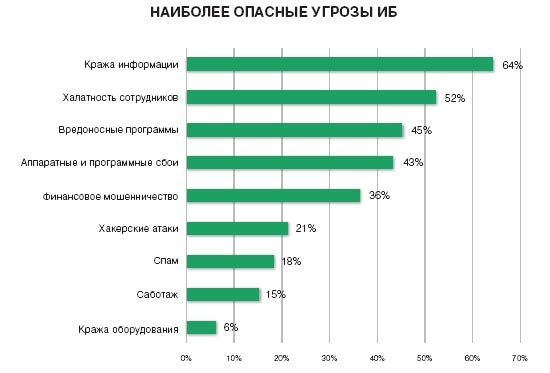
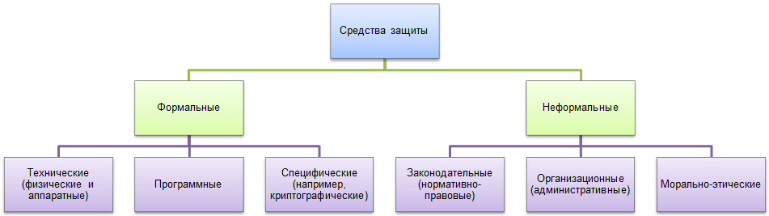

Введение
В связи с развитием информационных технологий и компьютеризацией экономики одним из важнейших вопросов в деятельности компании становится обеспечение информационной безопасности.
Информация – это один из самых ценных и важных активов любого предприятия и должна быть надлежащим образом защищена.
Что такое информационная безопасность?
Информационная безопасность — практика предотвращения несанкционированного доступа, использования, раскрытия, искажения, изменения, исследования, записи или уничтожения информации. Это универсальное понятие применяется вне зависимости от формы, которую могут принимать данные (электронная или, например, физическая). Основная задача информационной безопасности — сбалансированная защита конфиденциальности, целостности и доступности данных, с учётом целесообразности применения и без какого-либо ущерба производительности организации. Это достигается, в основном, посредством многоэтапного процесса управления рисками, который позволяет идентифицировать основные средства и нематериальные активы, источники угроз, уязвимости, потенциальную степень воздействия и возможности управления рисками. Этот процесс сопровождается оценкой эффективности плана по управлению рисками.
Для того, чтобы стандартизовать эту деятельность, научное и профессиональное сообщества находятся в постоянном сотрудничестве, направленном на выработку базовой методологии, политик и индустриальных стандартов в области технических мер защиты информации, юридической ответственности, а также стандартов обучения пользователей и администраторов. Эта стандартизация в значительной мере развивается под влиянием широкого спектра законодательных и нормативных актов, которые регулируют способы доступа, обработки, хранения и передачи данных. Однако внедрение любых стандартов и методологий в организации может иметь лишь поверхностный эффект, если культура непрерывного совершенствования не привита должным образом.
Общие сведения
В основе информационной безопасности лежит деятельность по защите информации — обеспечению её конфиденциальности, доступности и целостности, а также недопущению какой-либо компрометации в критической ситуации. К таким ситуациям относятся природные, техногенные и социальные катастрофы, компьютерные сбои, физическое похищение и тому подобные явления.
В то время, как делопроизводство большинства организаций в мире до сих пор основано на бумажных документах, требующих соответствующих мер обеспечения информационной безопасности, наблюдается неуклонный рост числа инициатив по внедрению цифровых технологий на предприятиях, что влечёт за собой привлечение специалистов по безопасности информационных технологий (ИТ) для защиты информации. Эти специалисты обеспечивают информационную безопасность технологии (в большинстве случаев — какой-либо разновидности компьютерных систем). Следует отметить, что под компьютером в данном контексте подразумевается не только бытовой персональный компьютер, а цифровые устройства любой сложности и назначения, начиная от примитивных и изолированных, наподобие электронных калькуляторов и бытовых приборов, вплоть до индустриальных систем управления и суперкомпьютеров, объединённых компьютерными сетями. Крупнейшие предприятия и организации, в силу жизненной важности и ценности информации для их бизнеса, нанимают специалистов по информационной безопасности, как правило, себе в штат. В их задачи входит обезопасить все технологии от вредоносных кибератак, зачастую нацеленных на похищение важной конфиденциальной информации или на перехват управления внутренними системами организации.
Информационная безопасность, как сфера занятости, значительно развилась и выросла в последние годы. В ней возникло множество профессиональных специализаций, например, таких, как безопасность сетей и связанной инфраструктуры, защиты программного обеспечения и баз данных, аудит информационных систем, планирование непрерывности бизнеса, выявление электронных записей и компьютерная криминалистика. Профессионалы информационной безопасности имеют весьма стабильную занятость и высокий спрос на рынке труда.
Масштабные исследования, проведённые организацией ISC показали, что на 2017 год 66 % руководителей информационной безопасности признали острую нехватку рабочей силы в своих подразделениях, а по прогнозам к 2022 году недостаток специалистов в этой области составит по всему миру 1 800 000 человек.
Угрозы и меры противодействия
Угрозы информационной безопасности могут принимать весьма разнообразные формы. На 2018 год наиболее серьёзными считались угрозы связанные с «преступлением как услугой», интернетом вещей, цепями поставок и усложнением требований регуляторов. «Преступление как услуга» представляет собой модель предоставления зрелыми преступными сообществами пакетов криминальных услуг на даркнет-рынке по доступным ценам начинающим киберпреступникам. Это позволяет последним совершать хакерские атаки, ранее недоступные из-за высокой технической сложности или дороговизны, делая киберпреступность массовым явлением. Организации активно внедряют интернет вещей, устройства которого зачастую спроектированы без учёта требований безопасности, что открывает дополнительные возможности для атаки. К тому же, быстрое развитие и усложнение Интернета вещей снижает его прозрачность, что в сочетании с нечётко определёнными правовыми нормами и условиями позволяет организациям использовать собранные устройствами персональные данные своих клиентов по собственному усмотрению без их ведома. Кроме того, для самих организаций проблематично отслеживать, какие из собранных устройствами интернета вещей данных передаются во вне. Угроза цепей поставок состоит в том, что организации, как правило, передают своим поставщикам разнообразную ценную и конфиденциальную информацию, в результате чего теряют непосредственный контроль над ней.
Таким образом, значительно возрастает риск нарушения конфиденциальности, целостности или доступности этой информации. Всё новые и новые требования регуляторов значительно осложняют управление жизненно-важными информационными активами организаций.
Например, введённый в действие в 2018 году в Евросоюзе Общий регламент защиты персональных данных, требует от любой организации в любой момент времени на любом участке собственной деятельности или цепи поставок, продемонстрировать, какие персональные данные и для каких целей имеются там в наличии, как они обрабатываются, хранятся и защищаются. Причём эта информация должна быть предоставлена не только в ходе проверок уполномоченными органами, но и по первому требованию частного лица — владельца этих данных.
Соблюдение такого комплаенса требует отвлечения значительных бюджетных средств и ресурсов от других задач информационной безопасности организации. И хотя упорядочение обработки персональных данных предполагает в долгосрочной перспективе улучшение информационной безопасности, в краткосрочном плане риски организации заметно возрастают.
 Большинство людей так, или иначе испытывают на себе воздействие угроз информационной безопасности. Например, становятся жертвами вредоносных программ (вирусов и червей, троянских программ, программ-вымогателей), фишинга или кражи личности. Фишинг представляет собой мошенническую попытку завладения конфиденциальной информацией (например, учётной записью, паролем или данными кредитной карты). Обычно пользователя Интернета стараются заманить на мошеннический веб-сайт, неотличимый от оригинального сайта какой-либо организации (банка, интернет-магазина, социальной сети и т. п.).
Как правило, такие попытки совершаются с помощью массовых рассылок поддельных электронных писем якобы от имени самой организации, содержащих ссылки на мошеннические сайты. Открыв такую ссылку в браузере, ничего не подозревающий пользователь вводит свои учётные данные, которые становятся достоянием мошенников. Термин Identity Theft с англ. — «кража личности» появился в английском языке в 1964 году для обозначения действий, в которых чьи-либо персональные данные (например, имя, учётная запись в банковской системе или номер кредитной карты, часто добытые с помощью фишинга) используются для мошенничества и совершения иных преступлений. Тот, от чьего имени преступники получают незаконные финансовые преимущества, кредиты или совершают иные преступления, зачастую сам становится обвиняемым, что может иметь для него далеко идущие тяжёлые финансовые и юридические последствия. Информационная безопасность оказывает непосредственное влияние на неприкосновенность частной жизни, определение которой в различных культурах может весьма разниться.
Органы государственной власти, вооружённые силы, корпорации, финансовые институты, медицинские учреждения и частные предприниматели постоянно накапливают значительные объёмы конфиденциальной информации о своих сотрудниках, клиентах, продуктах, научных исследованиях и финансовых результатах. Попадание такой информации в руки конкурентов или киберпреступников может повлечь для организации и её клиентов далеко идущие юридические последствия, невосполнимые финансовые и репутационные потери. С точки зрения бизнеса информационная безопасность должна быть сбалансирована относительно затрат. Экономическая модель Гордона-Лоба описывает математический аппарат для решения этой задачи. Основными способами противодействия угрозам информационной безопасности или информационным рискам являются:
- снижение — внедрение мер безопасности и противодействия для устранения уязвимостей и предотвращения угроз;
- передача — перенос затрат, связанных с реализацией угроз на третьих лиц: страховые или аутсорсинговые компании;
- принятие — формирование финансовых резервов в случае, если стоимость реализации мер безопасности превышает потенциальный ущерб от реализации угрозы;
- отказ — отказ от чрезмерно рисковой деятельности.
Ключевые принципы
В 1975 году Джерри Зальцер и Майкл Шрёдер в статье «Защита информации в компьютерных системах» впервые предложили разделить нарушения безопасности на три основных категории: неавторизованное раскрытие информации (UIR), неавторизованное изменение информации (UIM) и неавторизованный отказ в доступе (UDU) к информации. Позднее эти категории получили краткие наименования и стандартизированные определения:
- Confidentiality с англ. — «конфиденциальность» — свойство информации быть недоступной или закрытой для неавторизованных лиц, сущностей или процессов;
- Integrity с англ. — «целостность» — свойство сохранения правильности и полноты активов;
- Availability с англ. — «доступность» — свойство информации быть доступной и готовой к использованию по запросу авторизованного субъекта, имеющего на это право.
В совокупности эти три ключевых принципа информационной безопасности именуются "триадой CIA".
Конфиденциальность
Конфиденциальность информации достигается предоставлением к ней доступа c наименьшими привилегиями исходя из принципа минимальной необходимой осведомлённости. Иными словами, авторизованное лицо должно иметь доступ только к той информации, которая ему необходима для исполнения своих должностных обязанностей. Упомянутые выше преступления против неприкосновенности частной жизни, такие, как кража личности, являются нарушениями конфиденциальности. Одной из важнейших мер обеспечения конфиденциальности является классификация информации, которая позволяет отнести её к строго конфиденциальной, или предназначенной для публичного, либо внутреннего пользования. Шифрование информации — характерный пример одного из средств обеспечения конфиденциальности.
Целостность
Чёткое осуществление операций или принятие верных решений в организации возможно лишь на основе достоверных данных, хранящихся в файлах, базах данных или системах, либо транслируемых по компьютерным сетям. Иными словами, информация должна быть защищена от намеренного, несанкционированного или случайного изменения по сравнению с исходным состоянием, а также от каких-либо искажений в процессе хранения, передачи или обработки.
Однако её целостности угрожают компьютерные вирусы и логические бомбы, ошибки программирования и вредоносные изменения программного кода, подмена данных, неавторизованный доступ, бэкдоры и тому подобное. Помимо преднамеренных действий, во многих случаях неавторизованные изменения важной информации возникают в результате технических сбоев или человеческих ошибок по оплошности или из-за недостаточной профессиональной подготовки. Например, к нарушению целостности ведут: случайное удаление файлов, ввод ошибочных значений, изменение настроек, выполнение некорректных команд, причём, как рядовыми пользователями, так и системными администраторами.
Для защиты целостности информации необходимо применение множества разнообразных мер контроля и управления изменениями информации и обрабатывающих её систем. Типичным примером таких мер является ограничение круга лиц с правами на изменения лишь теми, кому такой доступ необходим для выполнения служебных обязанностей. При этом следует соблюдать принцип разграничения полномочий, согласно которому изменения в данные или информационную систему вносит одно лицо, а подтверждает их или отклоняет — другое. Кроме того, любые изменения в ходе жизненного цикла информационных системы должны быть согласованны, протестированы на предмет обеспечения информационной целостности и внесены в систему только корректно сформированными транзакциями. Обновления программного обеспечения необходимо производить с соблюдением мер безопасности. Любые действия, влекущие изменения, должны быть обязательно протоколированы.
Доступность
Согласно этому принципу, информация должна быть доступна авторизованным лицам, когда это необходимо. Основными факторами, влияющими на доступность информационных систем, являются DoS-атаки, атаки программ-вымогателей, саботаж. Кроме того, источником угроз доступности являются непреднамеренные человеческие ошибки по оплошности или из-за недостаточной профессиональной подготовки: случайное удаление файлов или записей в базах данных, ошибочные настройки систем; отказ в обслуживании в результате превышения допустимой мощности или недостатка ресурсов оборудования, либо аварий сетей связи; неудачно проведённое обновление аппаратного или программного обеспечения; отключение систем из-за аварий энергоснабжения. Существенную роль в нарушении доступности играют также природные катастрофы: землетрясения, смерчи, ураганы, пожары, наводнения и тому подобные явления. Во всех случаях конечный пользователь теряет доступ к информации, необходимой для его деятельности, возникает вынужденный простой. Критичность системы для пользователя и её важность для выживания организации в целом определяют степень воздействия времени простоя. Недостаточные меры безопасности увеличивают риск поражения вредоносными программами, уничтожения данных, проникновения из-вне или DoS-атак. Подобные инциденты могут сделать системы недоступными для обычных пользователей.